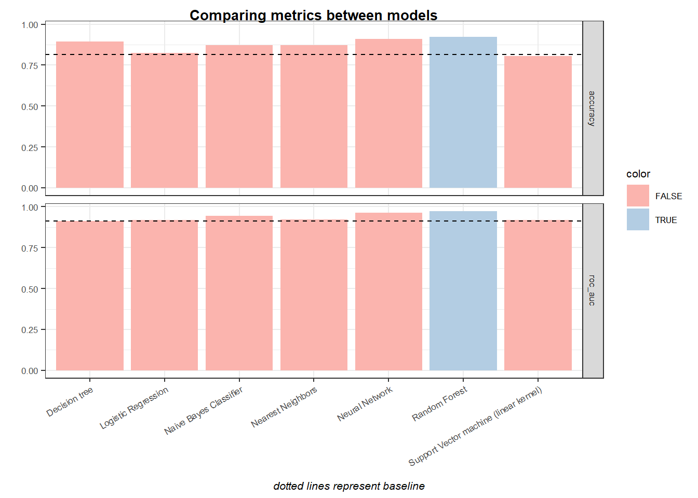

Stage 5 Evaluation and conclusion
From the initial experiments with different concurrent models the following results were achieved:
# Combine all initial experiments experiments
union_metrics <- rbind(
collect_metrics(nbayes_fit) %>% mutate(model = "Naive Bayes Classifier"),
collect_metrics(logit_fit) %>% mutate(model = "Logistic Regression"),
collect_metrics(kknn_fit) %>% mutate(model = "Nearest Neighbors"),
collect_metrics(tree_fit) %>% mutate(model = "Decision tree"),
collect_metrics(forest_fit) %>% mutate(model = "Random Forest"),
collect_metrics(sl_fit) %>% mutate(model = "Neural Network"),
collect_metrics(svm_linear_fit) %>% mutate(model = "Support Vector machine (linear kernel)")
)#baseline
baseline <- data.frame(.metric = c("accuracy", "roc_auc"),values = c(0.816, 0.913))
# find max
data <-
filter( union_metrics, .metric %in% c("accuracy", "roc_auc") ) %>%
group_by(.metric) %>%
mutate(color = mean == max(mean))
ggplot(data = data, aes(x = model, y = mean, fill = color)) +
geom_bar(stat = "identity" ) +
geom_hline(data = baseline, aes(yintercept = values), linetype = "dashed") +
facet_grid(.metric ~ .) +
theme_masterDS() +
labs(
x = "",
y = "",
title = "Comparing metrics between models",
caption = "dotted lines represent baseline"
) +
theme(axis.text.x = element_text(angle = 30, hjust = 1, vjust = 1)) +
scale_fill_brewer(palette = "Pastel1") During the business understanding the most accurate model was defined has been the main goal for this project. Therefore, the model with the highest accuracy metric (other metrics like sensibility and specificity were calculated during the modeling stage) was the one answering the company needs.
Based on the results Random Forest shows the most promising values and future developments would be made using this model. It not only presents the highest metric for both accuracy and AUC ROC as it provides a more understandable model when compared to others.
Is worth noticing that the increase from a baseline of a simple model without any substantial preprocessing is not substantial making the case towards the use a simpler model, with simpler feature importance attribution and less need for heavy preprocessing.
5.1 Next steps.
Where to go from here
If no time constrains existed or this project was done on a real environment i would do the following differently:
Business understanding and the discovery phase in general is key to a successful project. The available information raise doubts about the data and the expected use for the model. Although some questions can be assumed its of paramount importance to gain a deeper knowledge about the “question” the company, client, project, etc wishes to answer. It impacts the list of models to experiment, the metrics to focus, etc.
A model is as good as the action it enacts. This is particularly key on settings similar to this project were we analyse marketing data. Modeling for a marketing team is not the same as modeling to trigger an automation pipeline. The first tend to prefer a inferring models which provide more information about the role of different features. In this context, black box models like Neural Networks might not be advisable.
On a similar note, when testing linear models, it makes sense to communicate and study coefficients even if its not the model with the highest metrics.
More information how data was gathered is needed for a better exploration. Many questions were raise during the EDA stage which needed to be assumed.
Data exploration needed to be expanded with more context information. This is not independent from the previous statement but some industry specific features might exist which could make sense to include.
Except for a random grid search, no hyperparameter tunning was done on this project. Random grid search is a first step when no more information is available to know on which direction to keep tuning the model. Next steps would include a manual grid search which would narrow the field of test for each model.
On this project uses the default model engine for each model. Different machines can return different models and have different performances.
Each model error (difference between real observation and prediction) would need to be studied to validate assumptions, quality of the model.